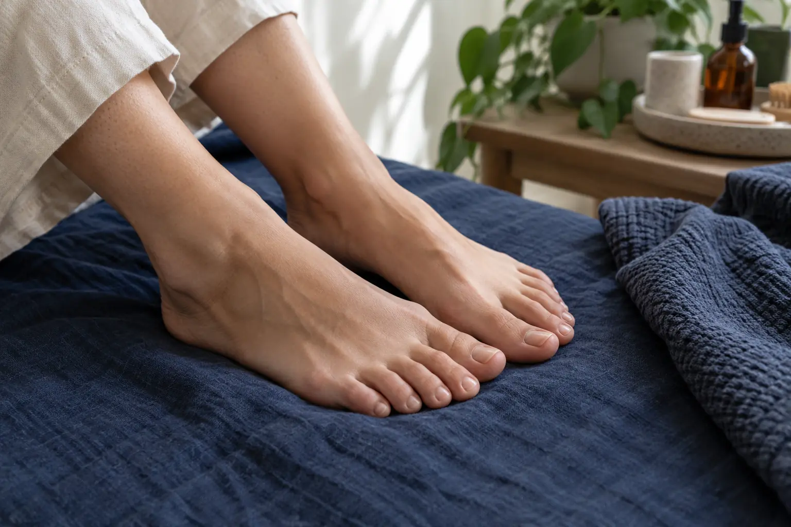

Pedikiūras be lakavimo: ko tikėtis iš priežiūros vizito?
Autorius: Madbeauty redakcija · Numatyta 2026 m. lapkričio 29 d. 10:00 (Lietuvos laiku)
Pedikiūras be lakavimo reiškia, kad pasirenkama paslauga be lakavimo, tačiau vien pavadinimas neatskleidžia visų darbų. Sužinokite, ką patikrinti apie nagų ir pėdų odos priežiūrą, seno gelio nuėmimą, kainą bei trukmę.

Pedikiūras be lakavimo – tai priežiūros vizitas, kurio pasirinktas rezultatas yra be nagų lako dangos. Šis pavadinimas nepasako, ar į paslaugą įeina tik nagų tvarkymas, ar ir pėdų odos priežiūra. Tai turi būti aiškiai nurodyta teikėjo meniu; seno gelio nuėmimą taip pat verta tikrinti atskirai.
Nagų sutvarkymas
„Be lakavimo“ apibūdina pabaigą, o ne visą darbo apimtį. Meniu pažiūrėkite, ar atskirai įvardytas nagų trumpinimas, formavimas ar odelių priežiūra. Jei nurodyta tik „pedikiūras be lakavimo“, vien iš pavadinimo negalima patvirtinti, kurie iš šių darbų bus atliekami.
- Jei norite tik natūralaus nago be spalvos, rinkitės tokį variantą, kurio aprašyme aiškiai nurodyta nagų priežiūra.
- Jei ant nagų yra ankstesnė danga, patikrinkite, ar jos nuėmimas įtrauktas, ar už jį mokama ir skiriama papildomai.
Pėdų odos darbai
Lakavimo nebuvimas savaime neatsako, ar tvarkoma ir pėdų oda. Jei jums svarbu ne tik nagai, pasiūlymo aprašyme ieškokite aiškiai įvardytų odos priežiūros darbų ir jų ribų. Vien žodis „higieninis“ paslaugos pavadinime neapibrėžia konkretaus protokolo ar gydymo.
Prieš pasirinkdami palyginkite aprašymą su tuo, ko jums reikia: nagų priežiūros, pėdų odos priežiūros ar abiejų. Kai meniu tai nepaaiškina, teikėjo paprašykite patikslinti įtraukiamus darbus ir ar norimas variantas yra atskiras.
Kas nepatenka į pasirinktą variantą
Be lakavimo nereiškia, kad įskaičiuotas seno gelio nuėmimas, nauja danga ar konkretūs pėdų odos darbai. Šiuos dalykus verta laikyti atskirais meniu punktais, kol pasiūlyme aiškiai nenurodyta kitaip. Jei nago išvaizda pakitusi, jos neslėpkite danga: Amerikos dermatologų akademija pataria nebandyti taip užmaskuoti nago problemos. Tai bendro pobūdžio rekomendacija, o ne Lietuvos paslaugų taisyklė.
Jei jums rūpi sveikatos problema, kosmetinės paslaugos aprašymas jos neįvertina. Dėl konkretaus nago būklės kreipkitės į sveikatos specialistą. Daugiau apie pedikiūro saugą rašo Amerikos dermatologų akademija.
Pedikiūras be lakavimo: metodo paskirtis ir konkreti paslaugos apimtis
Vieno Lietuvos meniu 2026 m. spalio 9 d. pavyzdyje „higieninis pedikiūras be lakavimo“ nurodytas kaip 75 min. paslauga už 45 Eur. Tame pačiame meniu pedikiūras su paprastu lakavimu nurodytas kaip 90 min. už 50 Eur, o variantas su seno gelio nuėmimu ir nauju lakavimu – iki 120 min. už 60 Eur. Tai vieno teikėjo tą dieną skelbtos sąlygos, ne įprasta Lietuvos kaina ar Madbeauty pasiūlymas.
Palyginkite šį datuotą pavyzdį „Classic Pedicure & Manicure“ meniu; skirtingų variantų apimtis gali skirtis, todėl kainos ir trukmės skirtumas savaime neparodo, kuris darbas prie pasirinktos dangos pridėtas.
Pavyzdžiui, jei norite nagų priežiūros be spalvos ir pėdų odos darbai jums nėra svarbūs, lyginkite būtent tokį aprašytą variantą. Jei norite ir odos priežiūros arba turite seną dangą, rinkitės tik meniu, kuriame šios dalys aiškiai aptartos. Taip patikimiau palyginsite darbų apimtį, kainą ir laiką, nesiremdami vien paslaugos pavadinimu.
Norėdami palyginti šį variantą su kitomis pedikiūro paslaugomis, tęskite nuo „Pedikiūro gidas: pėdų priežiūra, nagų sutvarkymas ir lakavimas“. Jei kataloge rodoma procedūra, pirmiausia pasirinkite nacionalinę procedūros grupę, tada aiškiai nurodykite miestą ir tikrinkite realų teikėjo įrašą. Šis gidas pats nėra teikėjo pasiūlymas ar rezervacija.
Palyginkite procedūrų aprašus kataloge: Pedikiūras. Konkrečią darbų apimtį, kainą ir prieinamumą tikrinkite prie realaus teikėjo pasiūlymo.
Šaltiniai
- Classic Pedicure & Manicure · LT meniu · www.treatwell.lt
- AAD · manikiūro ir pedikiūro sauga · www.aad.org